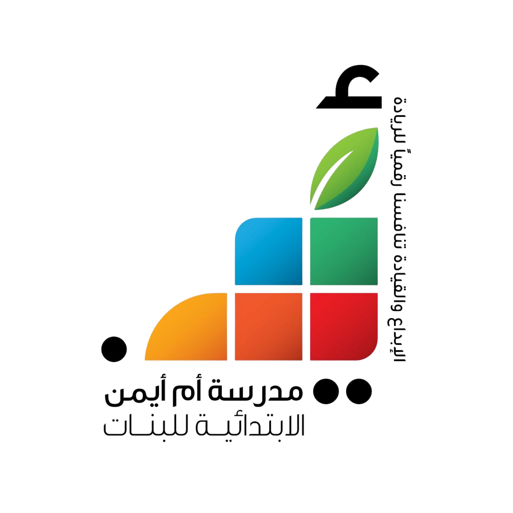
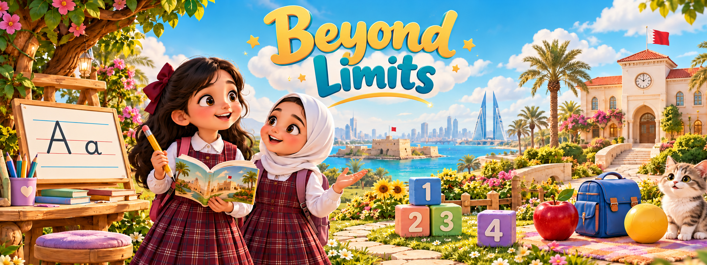

اكتبي الاسم الأول والصف لبدء التدريب وإرسال النجوم إلى سجل المدرسة.
Your name, class and stars will reach your school. Use your first name only.
Listen, try, and collect stars. Every new completed task earns a star. Mistakes never take stars away.
الحروف تُدرّس بأصواتها. الرسم على أربعة سطور. رتّبي حروف الكلمات القصيرة أولًا، ثم اكتبيها. في القواعد: شاهدي المثال، وتدرّبي، ثم ابدئي اللعبة.
Your first name, class, role and earned stars are sent automatically to the school’s English register. A copy stays on this device.
يُرسل الاسم الأول والصف ونوع المشاركة والنقاط تلقائيًا إلى سجل المدرسة الخاص بالإنجليزي. التسجيلات الصوتية لا تُرسل إلى سجل المدرسة.
About the learning content and audio
The check recognises the example word, not the isolated letter sound.
No recording is saved or replayed. Your browser’s speech service may process speech online. Only points reach the school register.